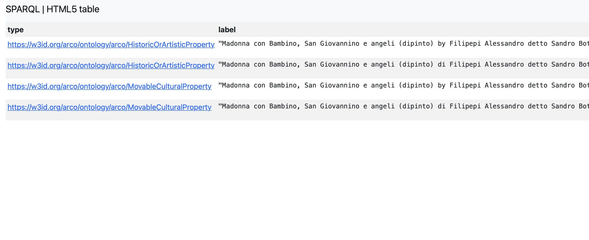
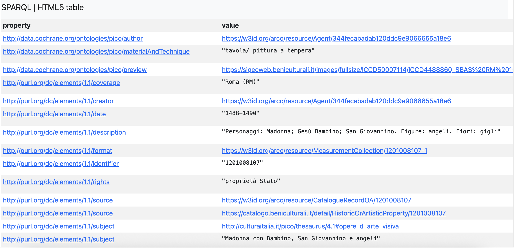
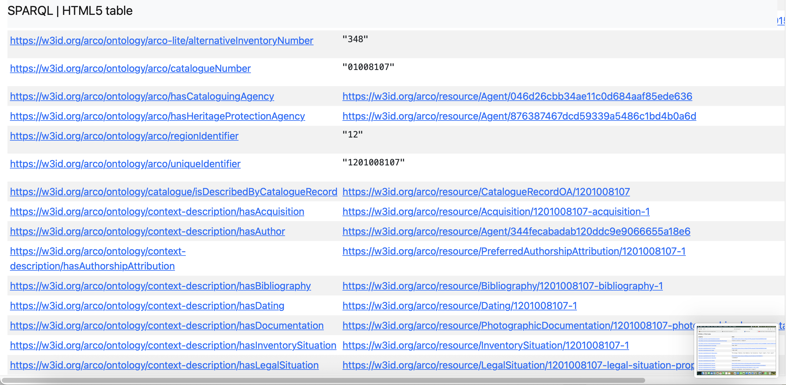
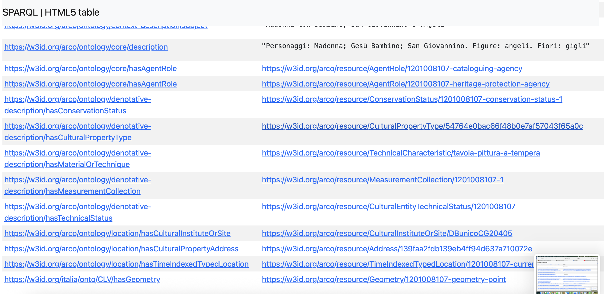
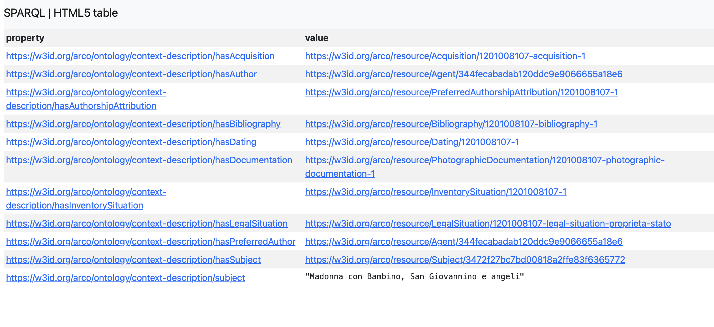
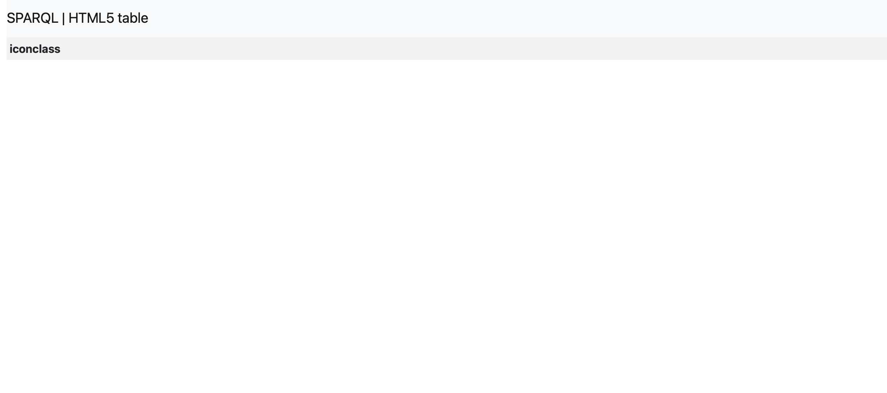

Selection of the Cultural Property and Preliminary SPARQL Exploration
Project Objective
This section presents the first stage of the project. The goal is to select one cultural property, verify its representation in the ArCo Knowledge Graph and perform an initial exploration before identifying knowledge gaps.
Selected Cultural Property
| Field | Value |
|---|---|
| Artwork | Madonna con Bambino, San Giovannino e angeli |
| Artist | Sandro Botticelli |
| Knowledge Graph | ArCo |
| Resource Type | HistoricOrArtisticProperty |
| Anchor URI | https://w3id.org/arco/resource/HistoricOrArtisticProperty/1201008107 |
| Research Goal | Identify missing semantic knowledge for KG enrichment |

Q1
Purpose: Verify the selected cultural property
PREFIX rdf: <http://www.w3.org/1999/02/22-rdf-syntax-ns#>
PREFIX rdfs: <http://www.w3.org/2000/01/rdf-schema#>
SELECT DISTINCT ?type ?label
WHERE {
VALUES ?cp { <https://w3id.org/arco/resource/HistoricOrArtisticProperty/1201008107> }
?cp rdf:type ?type .
OPTIONAL { ?cp rdfs:label ?label }
}

Interpretation. The resource exists in ArCo and is classified as HistoricOrArtisticProperty and MovableCulturalProperty. The Anchor URI is valid.
Q2
Purpose: Retrieve all RDF properties
SELECT DISTINCT ?property ?value
WHERE {
VALUES ?cp { <https://w3id.org/arco/resource/HistoricOrArtisticProperty/1201008107> }
?cp ?property ?value .
}
ORDER BY ?property



Interpretation. The artwork contains rich structured metadata including author, dating, bibliography, documentation, inventory, legal status, measurements, material, technique, image and identifiers.
Interpretation. Additional contextual and technical metadata.
Interpretation. Additional Dublin Core and ArCo metadata including description and subject.
Interpretation. Administrative metadata, labels and depiction links.
Q3
Purpose: Check hasSubject
PREFIX a-cd: <https://w3id.org/arco/ontology/context-description/>
SELECT ?subject
WHERE {
VALUES ?cp { <https://w3id.org/arco/resource/HistoricOrArtisticProperty/1201008107> }
OPTIONAL { ?cp a-cd:hasSubject ?subject }
}

Interpretation. The subject resource exists. Therefore the artwork already contains a structured subject reference.
Q4
Purpose: Check Iconclass
PREFIX a-cd: <https://w3id.org/arco/ontology/context-description/>
SELECT ?iconclass
WHERE {
VALUES ?cp { <https://w3id.org/arco/resource/HistoricOrArtisticProperty/1201008107> }
OPTIONAL { ?cp a-cd:iconclassCode ?iconclass }
}

Interpretation. No Iconclass value is returned. This is the first confirmed knowledge gap.
Preliminary Findings
Confirmed metadata available in ArCo:
- Author attribution
- Dating
- Bibliography
- Documentation
- Measurements
- Material and technique
- Subject
- Description of represented figures
- Image
- Inventory and legal information
Confirmed missing information:
- Iconclass classification.
This will be investigated further during the Knowledge Gap Identification stage. The full SPARQL exploration is presented in SPARQL.